안녕하세요 하수구수사대입니다.
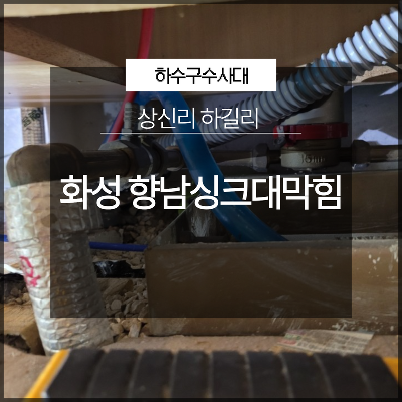
일상생활을 하면서 우리 눈에 보이지 않는 배수관 설비 같은 경우에는 평소에 잘 신경을 쓰지 않고 살아가는 경우가 많이 있습니다. 하지만 배관 같은 경우는 생활을 하면서 생기는 여러 가지 찌꺼기들과 생활하수들을 밖으로 배출을 해주기 때문에 원활한 배수를 유지하기 위해서는 정기적인 관리가 필요하다고 할 수 있습니다.
공중화장실이나 대형 식당 같은 경우에는 많은 사람들이 이용을 하는 곳인 만큼 평소에 배수구 관리를 잘 해주어야 하는데요. 이러한 관리를 통해서 갑작스럽게 배관이 막히는 것을 어느 정도 예방할 수 있게 되는 것입니다. 저희는 배관 케어를 하는 전문 업체로 여러 현장에서 해결을 하고 있는데요.
이번에 의뢰를 해주신 현장은
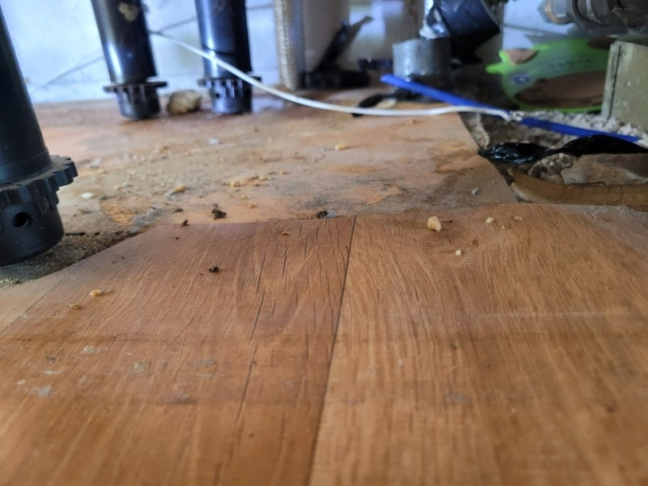
화성 향남싱크대막힘 상신리 하길리로 실제 방문 현장의 해결 후기를 통해서 배관 막힘이 발생하게 되면 어떻게 해야 하는지에 대해서 알려드리도록 하겠습니다. 이번에 방문을 한 화성 향남싱크대막힘 상신리 하길리의 현장은 한 식당으로 운영을 하고 있는 싱크대가 막히게 되면서 급하게 연락을 주신 곳이었는데요.
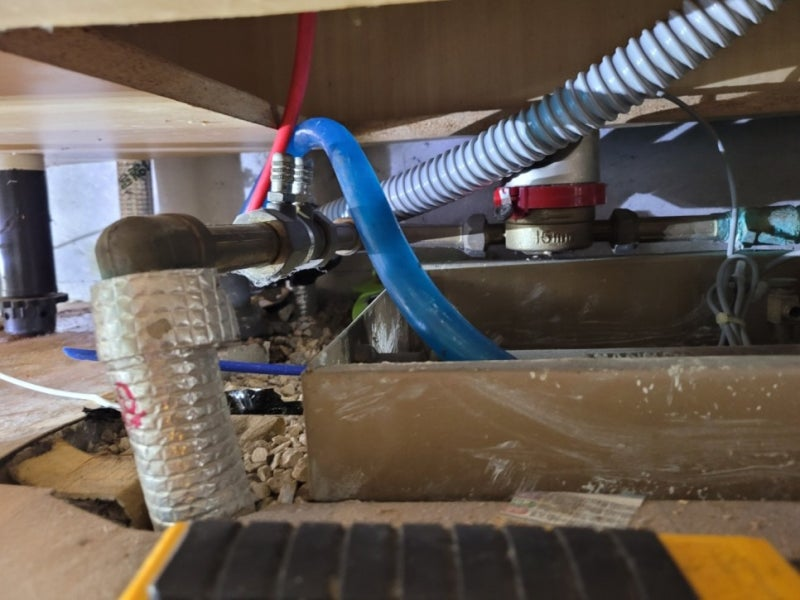
영업장의 경우에 배관이 막히게 되면 영업이익에도 문제가 되기 때문에 빠른 해결이 필요하다고 할 수 있습니다. 그래서 현장에 빠르게 도착을 해서 작업을 도와드렸습니다. 식당의 싱크대 위에서는 이미 역류까지 발생을 하고 있어서 심한 악취도 나고 있는 상황이었는데요.
식당에 있는 싱크대 쪽의 하수구가 심하게 막히게 되다 보니 다른 배수구에서도 전체적으로 물이 잘 빠지지 않고 있었습니다.
저희는 현장에 도착을 하게 되면
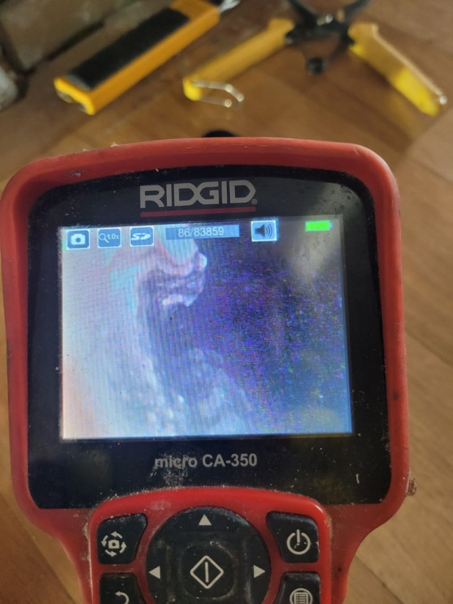
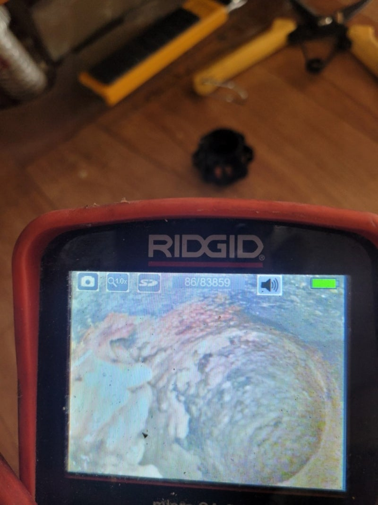
가장 먼저 배관 내부의 상황을 알아보기 위해서 배관 내시경 작업을 하게 됩니다. 싱크대 배관 입구를 찾아서 내부의 상황을 확인하는 작업을 하게 되는데요 육안으로 보이지 않는 배관 내부의 원인을 파악하기 위해서 내시경 카메라 작업은 꼭 필요하다고 할 수 있습니다.
전문 업체의 경우 이러한 작업은 배관 막힘을 해결하기 위해서 하는 필수 과정인데요. 배관의 내부 상태를 내시경으로 살펴보니 이미 내부에는 각종 음식물 찌꺼기들이 가득 쌓여있고 기름 덩어리들이 중간중간 막고 있는 것이 보였습니다. 이렇게 하루에도 많은 음식을 조리하는 식당 같은 경우에는 조심을 한다고 하더라도 알게 모르게 음식물이나 기름들이 하수구로 들어가게 되는 경우가 많이 있습니다.
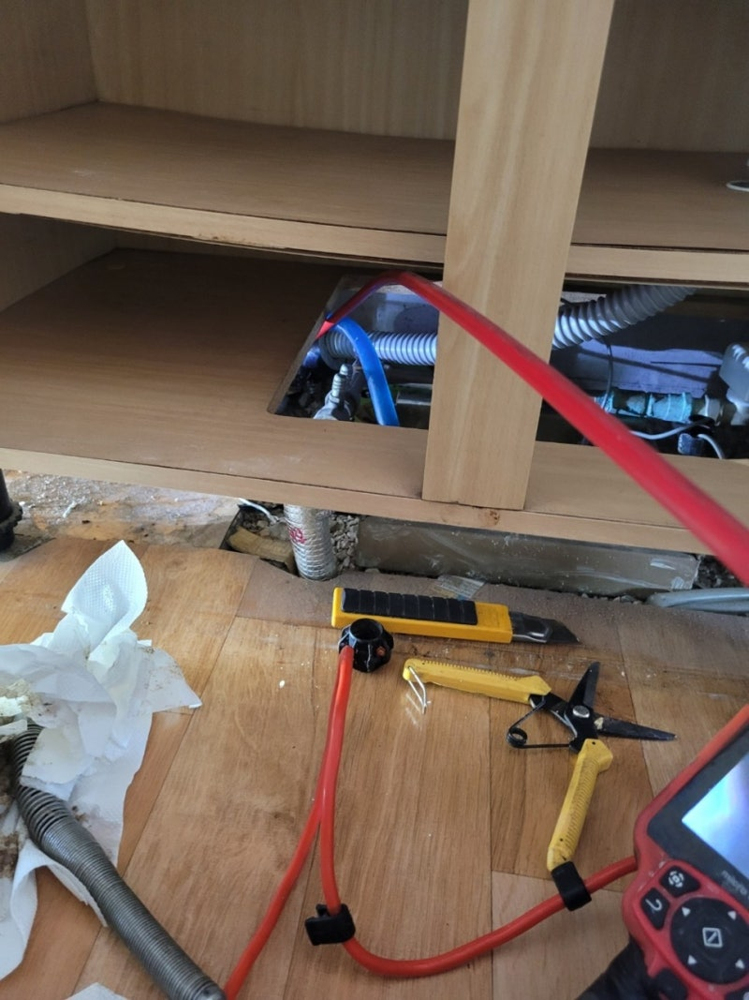
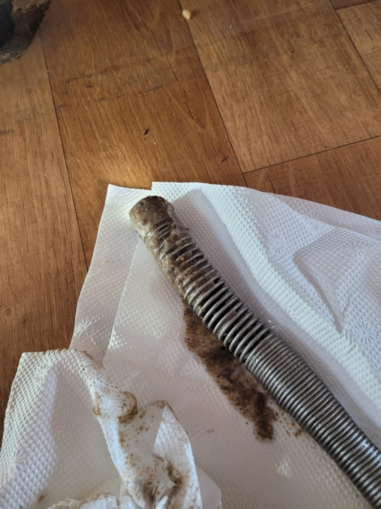
특히나 기름 같은 경우에는 기름 덩어리와 음식물들이 섞이고 엉키게 되면서 시간이 지나면 큰 덩어리가 만들어지게 될 수 있습니다. 평소에 이러한 것을 예방하기 위해서는 한 번씩 배수관 내로 뜨거운 물을 부어주어서 기름 덩어리들이 녹을 수 있도록 하면 어느 정도 예방을 할 수 있습니다.
내시경을 이용해서 내부의 막힘 원인을 파악한 후에
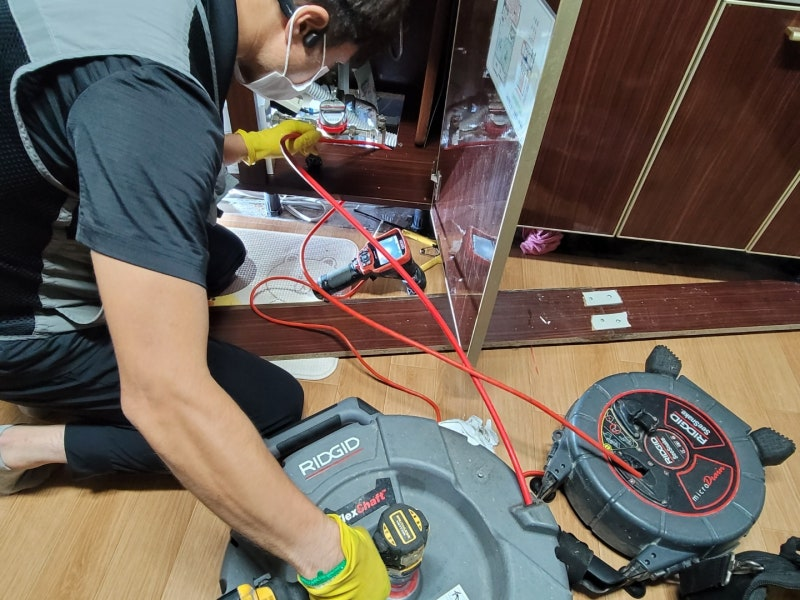
본격적으로 내부에 있는 이물질들을 처리하는 과정을 진행하였는데요. 내부의 이물질 덩어리들을 제거를 하기 위해서는 플렉스 샤프트를 사용해서 배관 내부를 스케일링하는 작업을 시작하였습니다. 플렉스 샤프트는 체인으로 하수구의 이물질을 부수고 제거를 해주는 역할을 하는데요.
카메라를 보면서 작업을 반복적으로 진행을 하면서 내부에 이물질들이 완전히 제거가 되도록 하였습니다. 이것은 현장에서 자주 사용이 되는 장비로 막힘의 원인이 되는 이물질들을 제거가 된 것을 확인을 하고 작업을 마무리하였습니다.
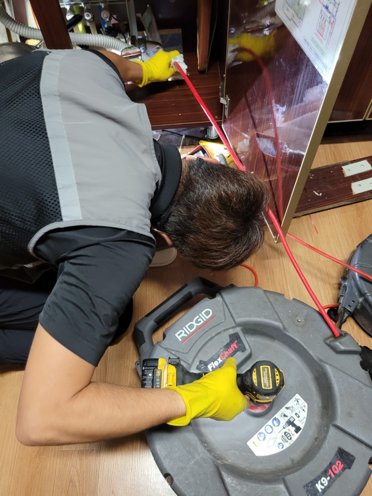
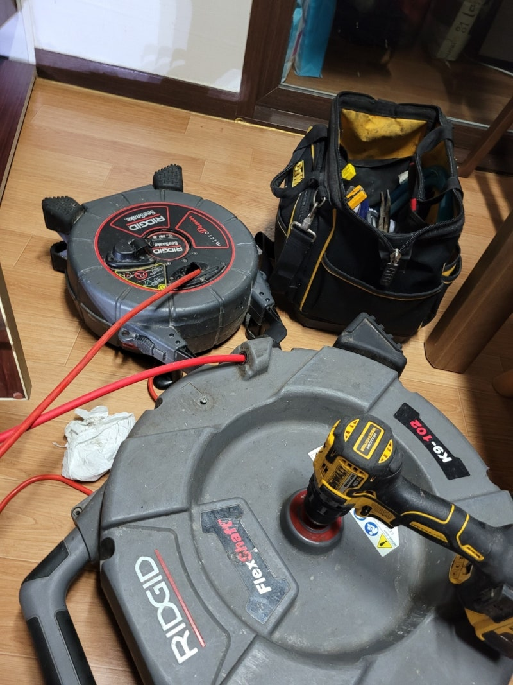
깨진 이물질들이 다시 들어가지 않도록 석션기로 빼주면서 작업을 해주었는데요 이물질이 떨어지게 되면 다시 뭉치게 되면서 배관의 내부를 막을 수 있기 때문에 주의를 해야 합니다.
이렇게 화성 향남싱크대막힘 상신리 하길리 현장의
배관 막힘을 완벽하게 해결하였습니다.
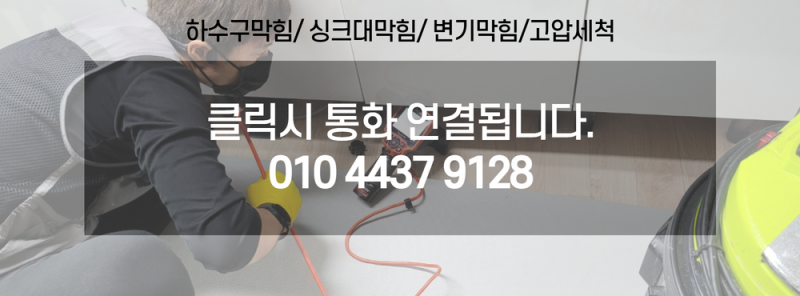